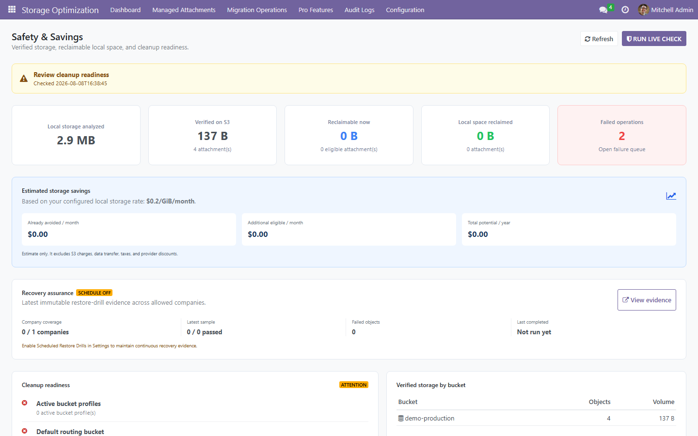
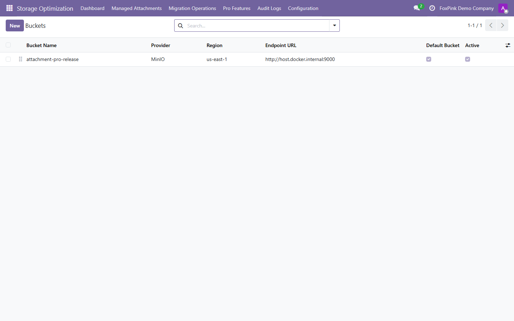
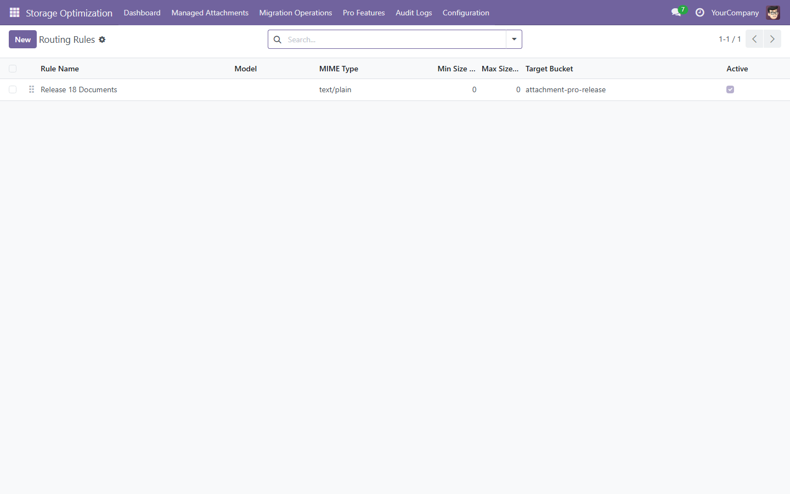
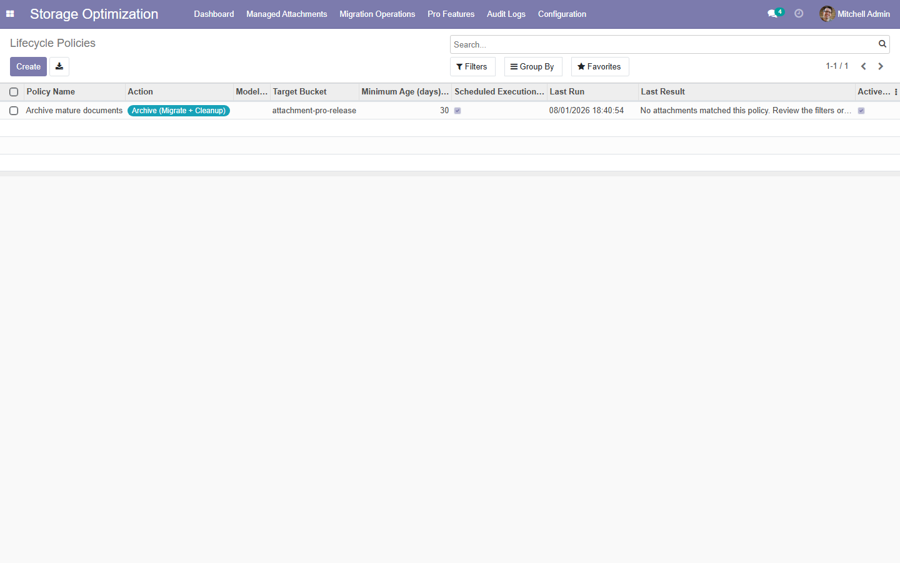
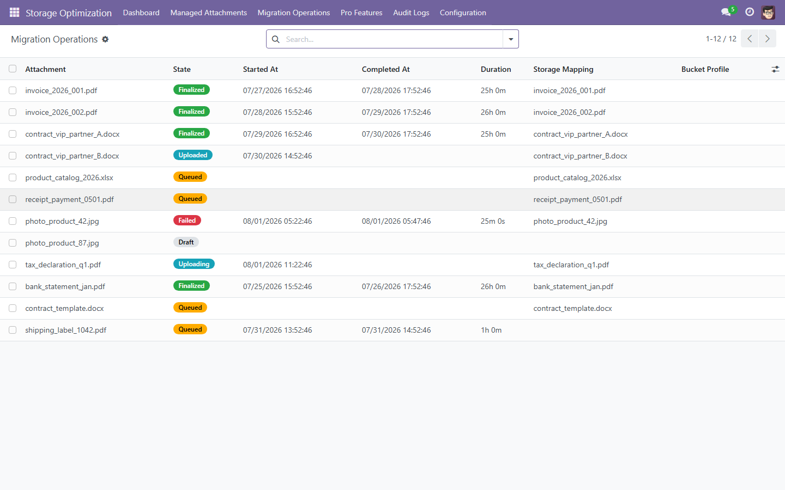
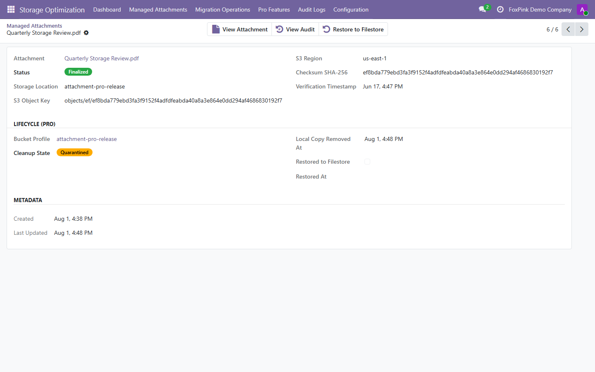
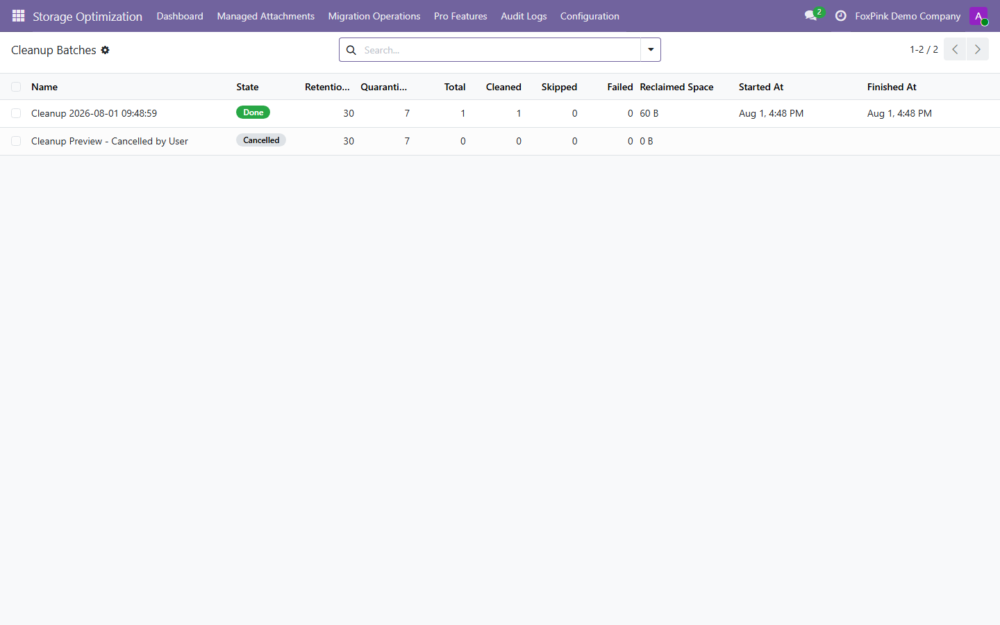
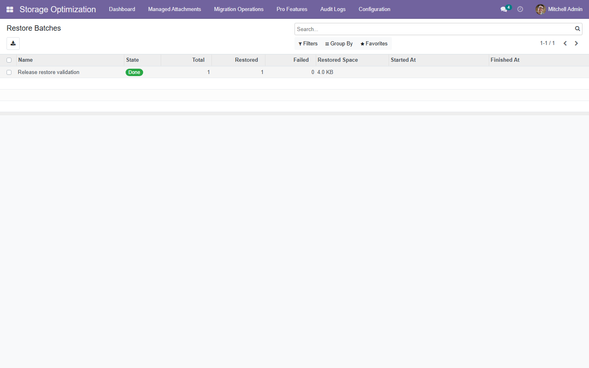
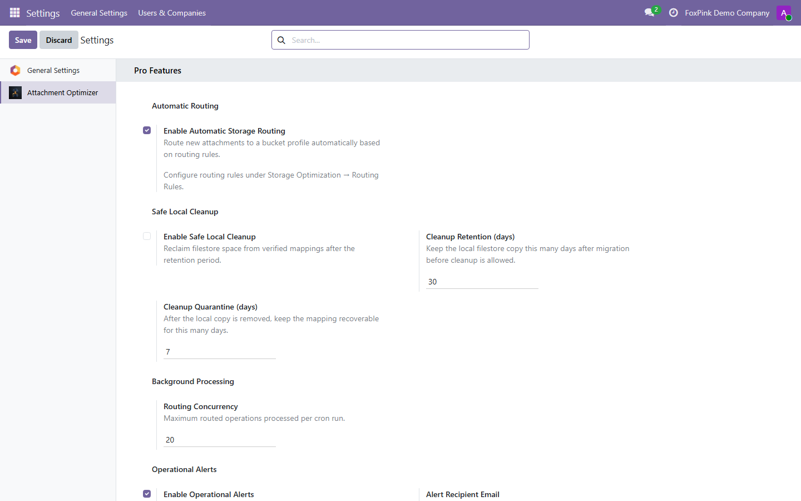

<!-- FOXPINK MODULE STORE LAYOUT v1.0 - LOCKED
Reusable structure: HERO -> VALUE -> FEATURES -> WHY -> EDITIONS -> SCREENSHOTS -> FAQ -> COMPATIBILITY -> INSTALLATION -> FOOTER.
For subsequent modules, update content inside sections only. Do not alter section order, CSS classes, widths, spacing, or color tokens.
-->
<section class="oe_container">
  <div class="oe_row oe_spaced fd-page" style="max-width:1040px; margin:0 auto;">
    <style>
@media (max-width:680px){.fd-page{padding-left:12px!important;padding-right:12px!important}.fd-page h2{font-size:22px!important}.fd-row{display:block!important}.fd-row>div{box-sizing:border-box!important;width:100%!important;display:block!important;margin-left:0!important;margin-right:0!important}}
    </style>

    <!-- HERO -->
    <div style="text-align:center; padding:40px 0 0;">
      <h2 style="font-size:40px; font-weight:800; color:#1e293b; margin:0 0 12px; letter-spacing:-0.5px;">Attachment Optimizer Pro</h2>
      <p style="font-size:18px; color:#64748b; max-width:720px; margin:0 auto 24px; line-height:1.7;">Automated routing, verified cleanup, lifecycle policies, and recovery for S3-compatible Odoo attachment storage.</p>
      <div style="margin:0 0 8px;">
        <span style="display:inline-block; border:1px solid #4f46e5; color:#4f46e5; font-weight:700; font-size:13px; padding:6px 16px; margin:4px;">Odoo 17.0</span>
        <span style="display:inline-block; border:1px solid #4f46e5; color:#4f46e5; font-weight:700; font-size:13px; padding:6px 16px; margin:4px;">Community &amp; Enterprise</span>
        <span style="display:inline-block; border:1px solid #4f46e5; color:#4f46e5; font-weight:700; font-size:13px; padding:6px 16px; margin:4px;">OPL-1</span>
        <span style="display:inline-block; border:1px solid #059669; color:#059669; font-weight:700; font-size:13px; padding:6px 16px; margin:4px;">US$49 One-Time</span>
      </div>
      <div style="margin:8px 0 0;"></div>
    </div>

    <!-- VALUE SUMMARY -->
    <div class="fd-row" style="margin:32px 0; text-align:center;">
      <div style="display:inline-block; width:31%; vertical-align:top; border:1px solid #e2e8f0; border-radius:12px; padding:20px; margin:4px;"><div style="font-size:17px; font-weight:800; color:#4f46e5;">Automatic Routing</div><div style="font-size:12px; color:#64748b; font-weight:600; margin-top:6px;">Rules by model, MIME, size, and company</div></div>
      <div style="display:inline-block; width:31%; vertical-align:top; border:1px solid #e2e8f0; border-radius:12px; padding:20px; margin:4px;"><div style="font-size:17px; font-weight:800; color:#4f46e5;">Verified Cleanup</div><div style="font-size:12px; color:#64748b; font-weight:600; margin-top:6px;">SHA-256 gated filestore reclamation</div></div>
      <div style="display:inline-block; width:31%; vertical-align:top; border:1px solid #e2e8f0; border-radius:12px; padding:20px; margin:4px;"><div style="font-size:17px; font-weight:800; color:#4f46e5;">Recoverable by Design</div><div style="font-size:12px; color:#64748b; font-weight:600; margin-top:6px;">Retention, quarantine, and restore</div></div>
    </div>

    <!-- FEATURES SECTION -->
    <h2 style="font-size:26px; font-weight:800; color:#1e293b; text-align:center; margin:40px 0 8px;">Key features</h2>
    <div class="fd-row" style="display:flex; margin:0 0 8px;">
      <div style="display:inline-block; width:23%; vertical-align:top; border:1px solid #e2e8f0; border-top:3px solid #4f46e5; border-radius:12px; padding:20px; margin:4px; margin-left:auto;"><h3 style="font-size:14px; margin:0 0 4px;">Multi-bucket routing</h3><p style="font-size:13px; color:#64748b; margin:0; line-height:1.5;">Route attachments to independent S3-compatible profiles.</p></div>
      <div style="display:inline-block; width:23%; vertical-align:top; border:1px solid #e2e8f0; border-top:3px solid #059669; border-radius:12px; padding:20px; margin:4px;"><h3 style="font-size:14px; margin:0 0 4px;">Lifecycle policies</h3><p style="font-size:13px; color:#64748b; margin:0; line-height:1.5;">Schedule migration, archive, cleanup, and restore.</p></div>
      <div style="display:inline-block; width:23%; vertical-align:top; border:1px solid #e2e8f0; border-top:3px solid #d97706; border-radius:12px; padding:20px; margin:4px;"><h3 style="font-size:14px; margin:0 0 4px;">Safe cleanup</h3><p style="font-size:13px; color:#64748b; margin:0; line-height:1.5;">Preview reclaimable space and blocked reasons, then re-verify local and live S3 checksums before cleanup.</p></div>
      <div style="display:inline-block; width:23%; vertical-align:top; border:1px solid #e2e8f0; border-top:3px solid #dc2626; border-radius:12px; padding:20px; margin:4px; margin-right:auto;"><h3 style="font-size:14px; margin:0 0 4px;">One-click restore</h3><p style="font-size:13px; color:#64748b; margin:0; line-height:1.5;">Recover selected objects, run scheduled drills, and gate automatic cleanup on current recovery evidence.</p></div>
    </div>
    <div class="fd-row" style="display:flex; margin:0 0 8px;">
      <div style="display:inline-block; width:23%; vertical-align:top; border:1px solid #e2e8f0; border-top:3px solid #7c3aed; border-radius:12px; padding:20px; margin:4px; margin-left:auto;"><h3 style="font-size:14px; margin:0 0 4px;">Atomic workers</h3><p style="font-size:13px; color:#64748b; margin:0; line-height:1.5;">Prevent duplicate claims during background processing.</p></div>
      <div style="display:inline-block; width:23%; vertical-align:top; border:1px solid #e2e8f0; border-top:3px solid #0891b2; border-radius:12px; padding:20px; margin:4px;"><h3 style="font-size:14px; margin:0 0 4px;">Analytics</h3><p style="font-size:13px; color:#64748b; margin:0; line-height:1.5;">Track migrated volume, reclaimed space, and failures.</p></div>
      <div style="display:inline-block; width:23%; vertical-align:top; border:1px solid #e2e8f0; border-top:3px solid #ea580c; border-radius:12px; padding:20px; margin:4px;"><h3 style="font-size:14px; margin:0 0 4px;">Operational alerts</h3><p style="font-size:13px; color:#64748b; margin:0; line-height:1.5;">Detect failed queues, stuck work, and verification errors.</p></div>
      <div style="display:inline-block; width:23%; vertical-align:top; border:1px solid #e2e8f0; border-top:3px solid #4f46e5; border-radius:12px; padding:20px; margin:4px; margin-right:auto;"><h3 style="font-size:14px; margin:0 0 4px;">Access control</h3><p style="font-size:13px; color:#64748b; margin:0; line-height:1.5;">Manager-only controls with multi-company isolation.</p></div>
    </div>

    <!-- WHY CHOOSE -->
    <div style="padding:32px 24px; margin:40px 0;"><h2 style="font-size:24px; font-weight:800; color:#1e293b; text-align:center; margin:0 0 24px;">Why Attachment Optimizer Pro?</h2><div class="fd-row" style="display:flex;">
      <div style="display:inline-block; width:30%; border:1px solid #e2e8f0; border-radius:12px; padding:20px 16px; margin:4px; margin-left:auto;"><div style="font-size:18px; font-weight:700; color:#4f46e5;">Production Safety</div><p style="font-size:13px; color:#64748b; line-height:1.6;">Verification, retention, quarantine, scheduled company-scoped restore drills, immutable evidence, and visible recovery-assurance status and automatic-cleanup gating are built into the lifecycle.</p></div>
      <div style="display:inline-block; width:30%; border:1px solid #e2e8f0; border-radius:12px; padding:20px 16px; margin:4px;"><div style="font-size:18px; font-weight:700; color:#4f46e5;">Real Savings</div><p style="font-size:13px; color:#64748b; line-height:1.6;">Reclaim local space after verification and measure the result.</p></div>
      <div style="display:inline-block; width:30%; border:1px solid #e2e8f0; border-radius:12px; padding:20px 16px; margin:4px; margin-right:auto;"><div style="font-size:18px; font-weight:700; color:#4f46e5;">Affordable Pro</div><p style="font-size:13px; color:#64748b; line-height:1.6;">US$49 one-time per Odoo major version, with no subscription.</p></div>
    </div></div>

    <!-- FREE AND PRO -->
    <h2 style="font-size:26px; font-weight:800; color:#1e293b; text-align:center; margin:40px 0 8px;">Start Free. Automate with Pro.</h2>
    <div class="fd-row" style="display:flex; margin:0 0 16px;">
      <div style="display:inline-block; width:47%; border:2px solid #4f46e5; border-radius:12px; padding:22px; margin:4px; margin-left:auto;"><div style="font-size:19px; font-weight:800; color:#4f46e5;">Free Edition</div><div style="font-size:12px; color:#64748b; margin-bottom:14px;">LGPL-3 &middot; No trial limits</div><p style="font-size:13px; color:#334155; line-height:1.8;">&#10003; Analysis and migration queues<br/>&#10003; SHA-256 upload verification<br/>&#10003; Retry, recovery, dashboard, and audit<br/>&#10003; Transparent reads and filestore fallback</p></div>
      <div style="display:inline-block; width:47%; border:2px solid #059669; border-radius:12px; padding:22px; margin:4px; margin-right:auto;"><div style="font-size:19px; font-weight:800; color:#059669;">Pro Edition &mdash; US$49</div><div style="font-size:12px; color:#64748b; margin-bottom:14px;">One-time per Odoo major version</div><p style="font-size:13px; color:#334155; line-height:1.8;">&#10003; Automatic multi-bucket routing<br/>&#10003; Verified cleanup and restore<br/>&#10003; Scheduled lifecycle policies<br/>&#10003; Analytics, alerts, and scale controls</p></div>
    </div>

    <!-- SCREENSHOTS GALLERY -->
    <h2 style="font-size:26px; font-weight:800; color:#1e293b; text-align:center; margin:40px 0 8px;">Screenshots</h2>
    <div style="margin:0 0 24px;">
      <div style="border:1px solid #e2e8f0; border-radius:12px; overflow:hidden; margin-bottom:16px;"></div><p style="font-size:13px; color:#64748b; text-align:center; margin:-8px 0 24px;">Storage Optimization Dashboard</p>
      <div style="border:1px solid #e2e8f0; border-radius:12px; overflow:hidden; margin-bottom:16px;"></div><p style="font-size:13px; color:#64748b; text-align:center; margin:-8px 0 24px;">S3-compatible Bucket Profiles</p>
      <div style="border:1px solid #e2e8f0; border-radius:12px; overflow:hidden; margin-bottom:16px;"></div><p style="font-size:13px; color:#64748b; text-align:center; margin:-8px 0 24px;">Automatic Routing Rules</p>
      <div style="border:1px solid #e2e8f0; border-radius:12px; overflow:hidden; margin-bottom:16px;"></div><p style="font-size:13px; color:#64748b; text-align:center; margin:-8px 0 24px;">Scheduled Lifecycle Policies</p>
      <div style="border:1px solid #e2e8f0; border-radius:12px; overflow:hidden; margin-bottom:16px;"></div><p style="font-size:13px; color:#64748b; text-align:center; margin:-8px 0 24px;">Managed Attachments</p>
      <div style="border:1px solid #e2e8f0; border-radius:12px; overflow:hidden; margin-bottom:16px;"></div><p style="font-size:13px; color:#64748b; text-align:center; margin:-8px 0 24px;">Mapping Lifecycle and Restore</p>
      <div style="border:1px solid #e2e8f0; border-radius:12px; overflow:hidden; margin-bottom:16px;"></div><p style="font-size:13px; color:#64748b; text-align:center; margin:-8px 0 24px;">Verified Cleanup Batches</p>
      <div style="border:1px solid #e2e8f0; border-radius:12px; overflow:hidden; margin-bottom:16px;"></div><p style="font-size:13px; color:#64748b; text-align:center; margin:-8px 0 24px;">Restore Batches</p>
      <div style="border:1px solid #e2e8f0; border-radius:12px; overflow:hidden; margin-bottom:16px;"></div><p style="font-size:13px; color:#64748b; text-align:center; margin:-8px 0 24px;">Attachment Optimizer Pro Settings</p>
    </div>

    <!-- FAQ -->
    <h2 style="font-size:22px; font-weight:800; color:#1e293b; text-align:center; margin:40px 0 8px;">Frequently asked questions</h2>
    <div style="margin:8px 0 40px;">
      <div style="border:1px solid #e2e8f0; border-radius:12px; padding:20px 24px; margin-bottom:12px;"><div style="display:flex; align-items:flex-start;"><div style="width:28px; height:28px; border-radius:8px; border:1px solid #eef2ff; line-height:28px; text-align:center; font-size:14px; color:#4f46e5; font-weight:700; margin-right:12px; flex-shrink:0;">?</div><div><div style="font-size:14px; font-weight:700; color:#1e293b; margin:0 0 4px;">Does Pro include the Free Edition?</div><p style="font-size:13px; color:#64748b; margin:0; line-height:1.6;">Yes. Pro declares Attachment Optimizer Free as a dependency. Odoo Apps provides the matching Free dependency, and Odoo installs it automatically with Pro. For manual ZIP or Git deployments, ensure both packages are available in the addons path; Odoo installs them in the correct order.</p></div></div></div>
      <div style="border:1px solid #e2e8f0; border-radius:12px; padding:20px 24px; margin-bottom:12px;"><div style="display:flex; align-items:flex-start;"><div style="width:28px; height:28px; border-radius:8px; border:1px solid #eef2ff; line-height:28px; text-align:center; font-size:14px; color:#4f46e5; font-weight:700; margin-right:12px; flex-shrink:0;">?</div><div><div style="font-size:14px; font-weight:700; color:#1e293b; margin:0 0 4px;">Is US$49 a subscription?</div><p style="font-size:13px; color:#64748b; margin:0; line-height:1.6;">No. It is a one-time app price for the purchased Odoo major version. Hosting, infrastructure, migration, installation and customization services are separate.</p></div></div></div>
      <div style="border:1px solid #e2e8f0; border-radius:12px; padding:20px 24px; margin-bottom:12px;"><div style="display:flex; align-items:flex-start;"><div style="width:28px; height:28px; border-radius:8px; border:1px solid #eef2ff; line-height:28px; text-align:center; font-size:14px; color:#4f46e5; font-weight:700; margin-right:12px; flex-shrink:0;">?</div><div><div style="font-size:14px; font-weight:700; color:#1e293b; margin:0 0 4px;">Which license applies?</div><p style="font-size:13px; color:#64748b; margin:0; line-height:1.6;">Attachment Optimizer Pro is licensed under OPL-1. Its separately installed Free Edition dependency is licensed under LGPL-3.</p></div></div></div>
      <div style="border:1px solid #e2e8f0; border-radius:12px; padding:20px 24px; margin-bottom:12px;"><div style="display:flex; align-items:flex-start;"><div style="width:28px; height:28px; border-radius:8px; border:1px solid #eef2ff; line-height:28px; text-align:center; font-size:14px; color:#4f46e5; font-weight:700; margin-right:12px; flex-shrink:0;">?</div><div><div style="font-size:14px; font-weight:700; color:#1e293b; margin:0 0 4px;">Can cleanup cause data loss?</div><p style="font-size:13px; color:#64748b; margin:0; line-height:1.6;">Cleanup requires retention eligibility, a stored SHA-256 checksum and fresh verification of both the local copy and the live S3 object. Missing or mismatched proof blocks cleanup and preserves the local copy.</p></div></div></div>
      <div style="border:1px solid #e2e8f0; border-radius:12px; padding:20px 24px; margin-bottom:12px;"><div style="display:flex; align-items:flex-start;"><div style="width:28px; height:28px; border-radius:8px; border:1px solid #eef2ff; line-height:28px; text-align:center; font-size:14px; color:#4f46e5; font-weight:700; margin-right:12px; flex-shrink:0;">?</div><div><div style="font-size:14px; font-weight:700; color:#1e293b; margin:0 0 4px;">Which S3 providers are supported?</div><p style="font-size:13px; color:#64748b; margin:0; line-height:1.6;">AWS S3 and MinIO are validated. Other providers implementing the S3 API can be checked with the built-in connection test.</p></div></div></div>
      <div style="border:1px solid #e2e8f0; border-radius:12px; padding:20px 24px; margin-bottom:12px;"><div style="display:flex; align-items:flex-start;"><div style="width:28px; height:28px; border-radius:8px; border:1px solid #eef2ff; line-height:28px; text-align:center; font-size:14px; color:#4f46e5; font-weight:700; margin-right:12px; flex-shrink:0;">?</div><div><div style="font-size:14px; font-weight:700; color:#1e293b; margin:0 0 4px;">Who is Pro designed for?</div><p style="font-size:13px; color:#64748b; margin:0; line-height:1.6;">Pro is designed for Odoo.sh and self-hosted teams that need automated routing, verified cleanup and controlled restore workflows. Odoo Online is not supported.</p></div></div></div>
    </div>

    <!-- COMPATIBILITY -->
    <div style="padding:28px; margin:40px 0 8px;">
      <h2 style="font-size:22px; font-weight:800; color:#1e293b; margin:0 0 20px; text-align:center;">Compatibility</h2>
      <div style="text-align:center;">
        <div style="display:inline-block; border:1px solid #bbf7d0; border-radius:8px; padding:6px 14px; margin:4px;"><span style="color:#16a34a; font-size:14px;">&#10003;</span> <span style="font-size:13px; font-weight:600; color:#166534;">14.0</span></div>
        <div style="display:inline-block; border:1px solid #bbf7d0; border-radius:8px; padding:6px 14px; margin:4px;"><span style="color:#16a34a; font-size:14px;">&#10003;</span> <span style="font-size:13px; font-weight:600; color:#166534;">15.0</span></div>
        <div style="display:inline-block; border:1px solid #bbf7d0; border-radius:8px; padding:6px 14px; margin:4px;"><span style="color:#16a34a; font-size:14px;">&#10003;</span> <span style="font-size:13px; font-weight:600; color:#166534;">16.0</span></div>
        <div style="display:inline-block; border:1px solid #bbf7d0; border-radius:8px; padding:6px 14px; margin:4px;"><span style="color:#16a34a; font-size:14px;">&#10003;</span> <span style="font-size:13px; font-weight:600; color:#166534;">17.0</span></div>
        <div style="display:inline-block; border:1px solid #bbf7d0; border-radius:8px; padding:6px 14px; margin:4px;"><span style="color:#16a34a; font-size:14px;">&#10003;</span> <span style="font-size:13px; font-weight:600; color:#166534;">18.0</span></div>
        <div style="display:inline-block; border:1px solid #bbf7d0; border-radius:8px; padding:6px 14px; margin:4px;"><span style="color:#16a34a; font-size:14px;">&#10003;</span> <span style="font-size:13px; font-weight:600; color:#166534;">19.0</span></div>
      </div>
      <p style="font-size:12px; color:#94a3b8; margin:16px 0 0; text-align:center;">Community &amp; Enterprise &middot; Amazon S3 and MinIO &middot; Odoo.sh and on-premise deployments</p>
    </div>

    <!-- INSTALLATION -->
    <h2 style="font-size:22px; font-weight:800; color:#1e293b; text-align:center; margin:40px 0 8px;">Installation</h2>
    <div style="border:1px solid #f59e0b; border-radius:10px; padding:14px 20px; margin:8px 0 12px; color:#92400e;"><strong>Server requirement:</strong> Install the Python package <code>boto3</code> in the Odoo runtime. Pro supports Odoo.sh and on-premise/Docker deployments and is not compatible with Odoo Online.</div>
    <div style="margin:8px 0;">
      <div style="display:flex; border:1px solid #e2e8f0; border-radius:10px; padding:14px 20px; margin-bottom:8px;"><div style="flex-shrink:0; width:32px; height:32px; border-radius:50%; border:2px solid #4f46e5; color:#4f46e5; font-size:14px; font-weight:800; line-height:32px; text-align:center; margin-right:14px; margin-top:auto; margin-bottom:auto;">1</div><div style="margin-top:auto; margin-bottom:auto;"><span style="font-weight:600; color:#1e293b;">Install the matching Free package</span> for your Odoo series.</div></div>
      <div style="display:flex; border:1px solid #e2e8f0; border-radius:10px; padding:14px 20px; margin-bottom:8px;"><div style="flex-shrink:0; width:32px; height:32px; border-radius:50%; border:2px solid #4f46e5; color:#4f46e5; font-size:14px; font-weight:800; line-height:32px; text-align:center; margin-right:14px; margin-top:auto; margin-bottom:auto;">2</div><div style="margin-top:auto; margin-bottom:auto;"><span style="font-weight:600; color:#1e293b;">Install Attachment Optimizer Pro</span>, then restart Odoo and update the Apps List.</div></div>
      <div style="display:flex; border:1px solid #e2e8f0; border-radius:10px; padding:14px 20px; margin-bottom:8px;"><div style="flex-shrink:0; width:32px; height:32px; border-radius:50%; border:2px solid #4f46e5; color:#4f46e5; font-size:14px; font-weight:800; line-height:32px; text-align:center; margin-right:14px; margin-top:auto; margin-bottom:auto;">3</div><div style="margin-top:auto; margin-bottom:auto;"><span style="font-weight:600; color:#1e293b;">Configure and test a bucket profile</span> before enabling automation.</div></div>
      <div style="display:flex; border:1px solid #e2e8f0; border-radius:10px; padding:14px 20px; margin-bottom:8px;"><div style="flex-shrink:0; width:32px; height:32px; border-radius:50%; border:2px solid #4f46e5; color:#4f46e5; font-size:14px; font-weight:800; line-height:32px; text-align:center; margin-right:14px; margin-top:auto; margin-bottom:auto;">4</div><div style="margin-top:auto; margin-bottom:auto;"><span style="font-weight:600; color:#1e293b;">Validate a small migration and restore</span>, then configure routing and lifecycle policies.</div></div>
      <div style="display:flex; border:1px solid #059669; border-radius:10px; padding:14px 20px; margin-bottom:8px;"><div style="flex-shrink:0; width:32px; height:32px; border-radius:50%; border:2px solid #059669; color:#059669; font-size:14px; font-weight:800; line-height:32px; text-align:center; margin-right:14px; margin-top:auto; margin-bottom:auto;">&#10003;</div><div style="font-weight:600; color:#059669; margin-top:auto; margin-bottom:auto;">Done &mdash; monitor, reclaim and restore from one controlled workflow.</div></div>
    </div>

    <!-- FOOTER -->
    <div style="border:1px solid #e2e8f0; border-radius:16px; padding:32px 24px; margin:40px 0 16px; text-align:center;">
      <div style="font-size:14px; font-weight:700; color:#1e293b; text-transform:uppercase; letter-spacing:1px; margin:0 0 12px;">Attachment Optimizer Pro</div>
      <p style="font-size:13px; color:#64748b; margin:0 auto 16px; line-height:1.6; max-width:520px;">Automated, verified S3-compatible attachment lifecycle management for Odoo. Licensed under OPL-1.</p>
      <div style="display:inline-block; border:2px solid #4f46e5; color:#4f46e5; font-weight:700; font-size:13px; padding:10px 28px; border-radius:8px; letter-spacing:0.2px;">github.com/FoxPinkHQ/attachment-optimizer-pro</div>
      <p style="font-size:11px; color:#94a3b8; margin:20px 0 0;">Version 17.0.1.0.24 &middot; Built and maintained by FoxPink</p>
    </div>
  </div>
</section>
